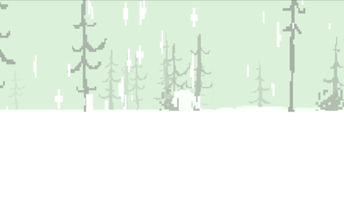

Зима. Снежный туман свирепо обволакивает лес. Пятна крови на снегу. За спиной охотничье ружьё. Бессмысленное блуждание в поисках того, кого, быть может, даже не существует. После недолгих скитаний понимаешь, что всё это время ходил по кругу. Решаешь бежать вперёд и только вперёд. В голову прокрадывается уже другая мысль: «как, чёрт возьми, отсюда выбраться?», и ты пытаешься хоть что-то разглядеть на горизонте. Деревья, кусты. Деревья, кусты. Кровь. И тут, в тумане на мгновение мелькает белая тень. Пытаешься догнать её. Но она уже скрылась в густой пелене. Может быть, это была снежинка? Но вдали снова промелькнула та тень. Да, это точно он — Снежный человек. Долго не думая, начинаешь его преследовать. Тень то растворяется в бледном горизонте, то вновь является взору. И вот, ты у него на хвосте. Спешно снимаешь ружьё с плеча, целишься. Руки дрожат от волнения: вот он, момент, которого ты ждал всю жизнь. Он уже на мушке. Медленно нажимаешь спусковой крючок, и… лес погружается в ночь, и белая тень скрывается во тьме. Видимость почти нулевая. Оборачиваешься то в одну сторону, то в другую. Что-то мелькнуло слева. Снова он. Бежишь. Вновь ружьё, прицел, мушка, и…наступает день. И тот, кого ты преследовал, рассеивается в снежной пелене тумана. Опять бессмысленное блуждание в поисках того, кого, быть может, даже не существует.
В голову прокрадывается мысль. «Я видел Снежного человека».